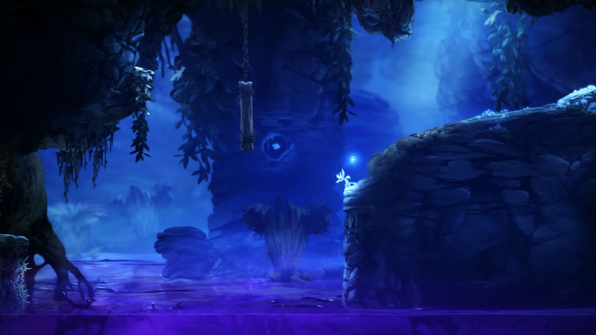

Ori and the Blind Forest
Produzido ao longo de quatro anos pela Moon Studios, grupo de desenvolvedores independentes de várias partes do mundo, Ori and the Blind Forest é um sidescroller com foco na aventura e exploração exclusivo para Xbox One e PC. O game cativa por seu estilo de arte e mecânicas de jogabilidade próprias, assim como a narrativa simples que se desenvolve bem e leva a um final emocionante.
Mas não se deixe enganar pelo visual colorido e alegre de Ori -- por trás da formosura dos cenários e lindos efeitos visuais está um mundo decadente e feroz, o que é evidenciado logo na cena de abertura. Para cada cantinho encantador há uma criatura pronta para o abate ou uma série de espinhos e armadilhas capazes de dar fim à vida do protagonista. E se acostume a isso, pois morrer é uma ocorrência tão comum que há um contador de mortes no jogo.

É gratificante atravessar um mapa complicado após inúmeras tentativas sem sucesso -- muitas das sequências no jogo foram feitas pensando na filosofia da tentativa e erro, o que pode ser frustrante para jogadores impacientes. Isso fica ainda mais evidente nos "chefões" de Ori and The Blind Forest que, na verdade, são sequências de fuga que representam um grande salto de dificuldade, pois sempre envolvem quase todas as habilidades aprendidas até o momento e qualquer falha na execução resulta em morte.
Para amenizar um pouco a frustração de morrer tantas vezes, o game tem um excelente sistema de quick save, aqui chamado de Soul Link. Em qualquer momento da aventura, exceto na presença de inimigos e durante as fugas, o jogador pode salvar o jogo, desde que tenha energia suficiente. É importante saber utilizar bem esse recurso, pois usar demasiadamente pode deixá-lo sem energia para um momento em que você definitivamente queria salvar. Usar de menos acaba fazendo com que você tenha que andar demais entre o último checkpoint e onde você morreu naquela fase.